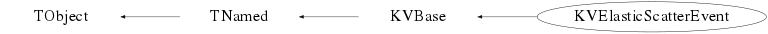

class KVElasticScatterEvent: public KVBase
KVElasticScatterEvent
simulate ElasticScatterEvent and answer of a given (multi-)detector : A + B -> A + B
Definition de la voie d'entrée avec les methodes suivantes : - SetSystem(KVDBSystem* sys); - SetSystem(Int_t zp,Int_t ap,Double_t ekin,Int_t zt,Int_t at); - SetTargNucleus(KVNucleus *nuc); - SetProjNucleus(KVNucleus *nuc); - SetTargetMaterial(KVTarget *targ,Bool_t IsRandomized=kTRUE); La possibilité est donnée d'effectuer des diffusions sur un noyau différent des noyaux de la cible Ex : SetTargetNucleus(new KVNucleus("181Ta")); SetTargetMaterial(new KVTarget("40Ca",1.0)) //cible de Ca de 1 mg/cm2 Diffusion sur un noyau de Ta et propagation dans une cible de Ca Si SetTargetMaterial est appelé et pas SetTargNucleus, le noyau cible est débuit du materiel choisi pour la cible Definition du domaine angulaire de diffusion et mode de tirage - DefineAngularRange(TObject*) domaine angulaire deilimité par une structure geometrique (KVPosition etc ...) - DefineAngularRange(Double_t tmin, Double_t tmax, Double_t pmin, Double_t pmax) intervalle en theta et phi (degree) - SetDiffNucleus(KVString name) name="PROJ" ou "TARG" determine a quel noyau projectile ou cible est associe le domaine angulaire choisi - SetRandomOption(Option_t* opt); opt="isotropic" ou "random" permet soit un tirage en theta aleatoire ou isotropique Réalistion des diffusions la méthode Process(Int_t ntimes) permet la réalisation de tous le processus : - propagation du noyau projectile dans la cible jusqu'au point d'intéraction - tirage d'un théta et phi pour la diffusion sur le noyau cible - calcul de la cinématique pour cette direction choisie (réalisé par la classe KV2Body) - si un KVMultiDetArray est défini et que la méthode SetDetectionOn(), détection des projectiles et cibles en voie de sortie - enregistrement des evts diffuses dans un arbre sous forme de KVEvent Exemple : es = new KVElasticScatterEvent(); Defintion de la voie d'entree es->SetSystem(54,129,8*129,28,58); 129Xe+58Ni@8MeV/A es->SetRandomOption("isotropic"); tirage en theta isotrope es->DefineAngularRange(6,8.5,12,30); theta 1 a 15 et phi 0 a 360 10000 diffusion es->Process(10000);
Function Members (Methods)
public:
| KVElasticScatterEvent() | |
| KVElasticScatterEvent(const KVElasticScatterEvent&) | |
| virtual | ~KVElasticScatterEvent() |
| void | TObject::AbstractMethod(const char* method) const |
| virtual void | TObject::AppendPad(Option_t* option = "") |
| static Bool_t | KVBase::AreEqual(Double_t x, Double_t y, Long64_t maxdif = 1) |
| static Bool_t | KVBase::ArrContainsValue(Int_t n, Int_t* arr, Int_t val) |
| static void | KVBase::BackupFileWithDate(const Char_t* path) |
| virtual void | TObject::Browse(TBrowser* b) |
| void | ChooseKinSol(Int_t choix = 1) |
| static TClass* | Class() |
| virtual const char* | TObject::ClassName() const |
| virtual void | KVBase::Clear(Option_t* opt = "") |
| virtual void | ClearHistos() |
| virtual void | ClearTrees() |
| virtual TObject* | TNamed::Clone(const char* newname = "") const |
| static void | KVBase::CombineFiles(const Char_t* file1, const Char_t* file2, const Char_t* newfilename, Bool_t keep = kTRUE) |
| virtual Int_t | TNamed::Compare(const TObject* obj) const |
| virtual void | KVBase::Copy(TObject&) const |
| virtual void | DefineAngularRange(TObject*) |
| void | DefineAngularRange(Double_t tmin, Double_t tmax, Double_t pmin, Double_t pmax) |
| virtual void | DefineHistos() |
| virtual void | DefineTrees() |
| virtual void | TObject::Delete(Option_t* option = "")MENU |
| virtual Int_t | TObject::DistancetoPrimitive(Int_t px, Int_t py) |
| virtual void | TObject::Draw(Option_t* option = "") |
| virtual void | TObject::DrawClass() constMENU |
| virtual TObject* | TObject::DrawClone(Option_t* option = "") constMENU |
| virtual void | TObject::Dump() constMENU |
| virtual void | TObject::Error(const char* method, const char* msgfmt) const |
| virtual void | TObject::Execute(const char* method, const char* params, Int_t* error = 0) |
| virtual void | TObject::Execute(TMethod* method, TObjArray* params, Int_t* error = 0) |
| virtual void | TObject::ExecuteEvent(Int_t event, Int_t px, Int_t py) |
| virtual void | TObject::Fatal(const char* method, const char* msgfmt) const |
| virtual void | TNamed::FillBuffer(char*& buffer) |
| virtual void | Filter() |
| static Bool_t | KVBase::FindClassSourceFiles(const Char_t* class_name, KVString& imp_file, KVString& dec_file, const Char_t* dir_name = ".") |
| static Bool_t | KVBase::FindExecutable(TString& exec, const Char_t* path = "$(PATH)") |
| static const Char_t* | KVBase::FindFile(const Char_t* search, TString& wfil) |
| virtual TObject* | TObject::FindObject(const char* name) const |
| virtual TObject* | TObject::FindObject(const TObject* obj) const |
| static const Char_t* | KVBase::GetBINDIRFilePath(const Char_t* namefile = "") |
| static const Char_t* | KVBase::GetDATABASEFilePath() |
| static const Char_t* | KVBase::GetDATADIRFilePath(const Char_t* namefile = "") |
| virtual Option_t* | TObject::GetDrawOption() const |
| static Long_t | TObject::GetDtorOnly() |
| static const Char_t* | KVBase::GetETCDIRFilePath(const Char_t* namefile = "") |
| KVHashList* | GetHistos() const |
| virtual const char* | TObject::GetIconName() const |
| static const Char_t* | KVBase::GetINCDIRFilePath(const Char_t* namefile = "") |
| virtual TVector3& | GetInteractionPointInTargetLayer() |
| KV2Body* | GetKV2Body() |
| static const Char_t* | KVBase::GetKVBuildDate() |
| static const Char_t* | KVBase::GetKVBuildDir() |
| static const Char_t* | KVBase::GetKVBuildType() |
| static const Char_t* | KVBase::GetKVBuildUser() |
| static const Char_t* | KVBase::GetKVSourceDir() |
| static const Char_t* | KVBase::GetKVVersion() |
| const Char_t* | KVBase::GetLabel() const |
| static const Char_t* | KVBase::GetLIBDIRFilePath(const Char_t* namefile = "") |
| static const Char_t* | KVBase::GetListOfPlugins(const Char_t* base) |
| virtual const char* | TNamed::GetName() const |
| KVNucleus* | GetNucleus(const Char_t* name) const |
| KVNucleus* | GetNucleus(Int_t ii) const |
| UInt_t | KVBase::GetNumber() const |
| UInt_t | KVBase::GetNumberOfObjects() const |
| virtual TObject* | KVBase::GetObject() const |
| virtual char* | TObject::GetObjectInfo(Int_t px, Int_t py) const |
| static Bool_t | TObject::GetObjectStat() |
| virtual Option_t* | TObject::GetOption() const |
| Double_t | GetPhi(KVString opt) const |
| static const Char_t* | KVBase::GetPluginURI(const Char_t* base, const Char_t* plugin) |
| KVReconstructedEvent* | GetReconstructedEvent() const |
| KVReconstructedNucleus* | GetReconstructedNucleus(KVString nucname) |
| KVEvent* | GetSimEvent() const |
| KVTarget* | GetTarget() const |
| static void | KVBase::GetTempFileName(TString& base) |
| static const Char_t* | KVBase::GetTEMPLATEDIRFilePath(const Char_t* namefile = "") |
| Double_t | GetTheta(KVString opt) const |
| virtual const char* | TNamed::GetTitle() const |
| KVHashList* | GetTrees() const |
| const Char_t* | KVBase::GetType() const |
| virtual UInt_t | TObject::GetUniqueID() const |
| static const Char_t* | KVBase::GetWORKDIRFilePath(const Char_t* namefile = "") |
| static const Char_t* | KVBase::gitBranch() |
| static const Char_t* | KVBase::gitCommit() |
| virtual Bool_t | TObject::HandleTimer(TTimer* timer) |
| virtual ULong_t | TNamed::Hash() const |
| Bool_t | KVBase::HasLabel() const |
| virtual void | TObject::Info(const char* method, const char* msgfmt) const |
| virtual Bool_t | TObject::InheritsFrom(const char* classname) const |
| virtual Bool_t | TObject::InheritsFrom(const TClass* cl) const |
| static void | KVBase::InitEnvironment() |
| virtual void | TObject::Inspect() constMENU |
| void | TObject::InvertBit(UInt_t f) |
| virtual TClass* | IsA() const |
| virtual Bool_t | KVBase::IsCalled(const Char_t* name) const |
| Bool_t | IsDetectionOn() const |
| virtual Bool_t | TObject::IsEqual(const TObject* obj) const |
| virtual Bool_t | TObject::IsFolder() const |
| Bool_t | IsIsotropic() const |
| Bool_t | TObject::IsOnHeap() const |
| Bool_t | IsProjNucSet() const |
| virtual Bool_t | TNamed::IsSortable() const |
| Bool_t | IsTargMatSet() const |
| Bool_t | IsTargNucSet() const |
| virtual Bool_t | KVBase::IsType(const Char_t* typ) const |
| Bool_t | IsUpdated() const |
| Bool_t | TObject::IsZombie() const |
| virtual void | KVBase::List() |
| static TPluginHandler* | KVBase::LoadPlugin(const Char_t* base, const Char_t* uri = "0") |
| virtual void | TNamed::ls(Option_t* option = "") const |
| void | TObject::MayNotUse(const char* method) const |
| virtual Bool_t | TObject::Notify() |
| void | TObject::Obsolete(const char* method, const char* asOfVers, const char* removedFromVers) const |
| static Bool_t | KVBase::OpenContextMenu(const char* method, TObject* obj, const char* alt_method_name = "") |
| static void | KVBase::OpenTempFile(TString& base, ofstream& fp) |
| static void | TObject::operator delete(void* ptr) |
| static void | TObject::operator delete(void* ptr, void* vp) |
| static void | TObject::operator delete[](void* ptr) |
| static void | TObject::operator delete[](void* ptr, void* vp) |
| void* | TObject::operator new(size_t sz) |
| void* | TObject::operator new(size_t sz, void* vp) |
| void* | TObject::operator new[](size_t sz) |
| void* | TObject::operator new[](size_t sz, void* vp) |
| KVElasticScatterEvent& | operator=(const KVElasticScatterEvent&) |
| virtual void | TObject::Paint(Option_t* option = "") |
| virtual void | TObject::Pop() |
| virtual void | Print(Option_t* = "") const |
| virtual void | Process(Int_t ntimes = 1, Bool_t reset = kTRUE) |
| virtual Int_t | TObject::Read(const char* name) |
| virtual void | TObject::RecursiveRemove(TObject* obj) |
| virtual void | Reset() |
| void | TObject::ResetBit(UInt_t f) |
| virtual void | ResetHistos() |
| virtual void | ResetTrees() |
| virtual void | TObject::SaveAs(const char* filename = "", Option_t* option = "") constMENU |
| virtual void | TObject::SavePrimitive(ostream& out, Option_t* option = "") |
| static Bool_t | KVBase::SearchAndOpenKVFile(const Char_t* name, ifstream& file, const Char_t* kvsubdir = "", KVLockfile* locks = 0) |
| static Bool_t | KVBase::SearchAndOpenKVFile(const Char_t* name, ofstream& file, const Char_t* kvsubdir = "", KVLockfile* locks = 0) |
| static Bool_t | KVBase::SearchKVFile(const Char_t* name, TString& fullpath, const Char_t* kvsubdir = "") |
| virtual void | SetAnglesForDiffusion(Double_t theta, Double_t phi) |
| void | TObject::SetBit(UInt_t f) |
| void | TObject::SetBit(UInt_t f, Bool_t set) |
| void | SetDetectionOn(Bool_t On = kTRUE) |
| void | SetDiffNucleus(KVString name = "PROJ") |
| virtual void | TObject::SetDrawOption(Option_t* option = "")MENU |
| static void | TObject::SetDtorOnly(void* obj) |
| void | KVBase::SetLabel(const Char_t* lab) |
| virtual void | TNamed::SetName(const char* name)MENU |
| virtual void | TNamed::SetNameTitle(const char* name, const char* title) |
| virtual void | KVBase::SetNumber(UInt_t num) |
| static void | TObject::SetObjectStat(Bool_t stat) |
| virtual void | SetProjNucleus(KVNucleus* nuc) |
| void | SetRandomOption(Option_t* opt = "isotropic") |
| virtual void | SetSystem(KVDBSystem* sys) |
| virtual void | SetSystem(Int_t zp, Int_t ap, Double_t ekin, Int_t zt, Int_t at) |
| virtual void | SetTargetMaterial(KVTarget* targ, Bool_t IsRandomized = kTRUE) |
| virtual void | SetTargNucleus(KVNucleus* nuc) |
| virtual void | TNamed::SetTitle(const char* title = "")MENU |
| void | KVBase::SetType(const Char_t* str) |
| virtual void | TObject::SetUniqueID(UInt_t uid) |
| virtual void | ShowMembers(TMemberInspector&) |
| virtual Int_t | TNamed::Sizeof() const |
| virtual void | Streamer(TBuffer&) |
| void | StreamerNVirtual(TBuffer& ClassDef_StreamerNVirtual_b) |
| virtual void | TObject::SysError(const char* method, const char* msgfmt) const |
| Bool_t | TObject::TestBit(UInt_t f) const |
| Int_t | TObject::TestBits(UInt_t f) const |
| virtual void | TreateEvent() |
| virtual void | TObject::UseCurrentStyle() |
| virtual Bool_t | ValidateEntrance() |
| virtual void | TObject::Warning(const char* method, const char* msgfmt) const |
| static const Char_t* | KVBase::WorkingDirectory() |
| virtual Int_t | TObject::Write(const char* name = 0, Int_t option = 0, Int_t bufsize = 0) |
| virtual Int_t | TObject::Write(const char* name = 0, Int_t option = 0, Int_t bufsize = 0) const |
protected:
| Bool_t | DefineTargetNucleusFromLayer(KVString layer_name = "") |
| virtual void | TObject::DoError(int level, const char* location, const char* fmt, va_list va) const |
| void | GenereKV2Body() |
| void | init() |
| virtual void | MakeDiffusion() |
| void | TObject::MakeZombie() |
| void | NewInteractionPointInTargetLayer() |
| void | PropagateInTargetLayer() |
| void | SortieDeCible() |
| void | StartEvents() |
Data Members
public:
| enum { | kProjIsSet | |
| kTargIsSet | ||
| kHasTarget | ||
| kIsUpdated | ||
| kIsDetectionOn | ||
| }; | ||
| enum KVBase::EKaliVedaBits { | kIsKaliVedaObject | |
| }; | ||
| enum TObject::EStatusBits { | kCanDelete | |
| kMustCleanup | ||
| kObjInCanvas | ||
| kIsReferenced | ||
| kHasUUID | ||
| kCannotPick | ||
| kNoContextMenu | ||
| kInvalidObject | ||
| }; | ||
| enum TObject::[unnamed] { | kIsOnHeap | |
| kNotDeleted | ||
| kZombie | ||
| kBitMask | ||
| kSingleKey | ||
| kOverwrite | ||
| kWriteDelete | ||
| }; |
protected:
| TString | KVBase::fLabel | label for the object |
| TString | TNamed::fName | object identifier |
| TString | TNamed::fTitle | object title |
| Int_t | kChoixSol | |
| Int_t | kDiffNuc | ! |
| TVector3 | kIPPVector | ! |
| Option_t* | kRandomOpt | ! |
| Int_t | kTreatedNevts | ! number of diffusion performed |
| Double_t | kXruth_evt | ! |
| KV2Body* | kb2 | ! |
| Int_t | kchoix_layer | ! |
| KVPosition | kposalea | ! |
| KVTarget* | ktarget | ! |
| KVHashList* | lhisto | ! to store control histogram |
| KVHashList* | ltree | ! to store tree |
| Double_t | phi_max | ! |
| Double_t | phi_min | |
| KVNucleus* | proj | !-> |
| KVReconstructedEvent* | rec_evt | ! |
| KVEvent* | sim_evt | ! |
| KVNucleus* | targ | !-> |
| Double_t | th_max | |
| Double_t | th_min |
Class Charts
{kind=link}
{kind=link}
{kind=link}
{kind=link}

Function documentation
void init()
Initialisation des variables par defaut theta 0,180 et phi 0,360 tirage isotropique noyau de reference pour la direction de diffusion Projectile
void SetSystem(KVDBSystem* sys)
Define the entrance channel using KVDBSystem object Get projectile and target via KVDBSystem::GetKinematics() Get target material using KVDBSystem::GetTarget()
void SetSystem(Int_t zp, Int_t ap, Double_t ekin, Int_t zt, Int_t at)
Define the entrance channel zp, ap, ekin, atomic number, mass number and kinetic energy (MeV) of the projectile zt, at, atomic number, mass number of the target
void SetDiffNucleus(KVString name = "PROJ")
Defini le noyau auquel se réfère la direction de diffusion (theta, phi) name="PROJ" (default) diffusion du projectile name="TARG" diffusion de la cible
void SetRandomOption(Option_t* opt = "isotropic")
Defini le mode de tirage aleatoire pour l'angle polaire opt="isotropic" ou "" (defaut) ou "random" voir KVPosition::GetRandomDirection()
Bool_t IsIsotropic() const
void ChooseKinSol(Int_t choix = 1)
Dans le cas d'une cinematique inverse (Zproj>Ztarget) deux solutions cinetiques sont possibles pour un meme angle de diffusion du projectile choix=1, on traite seulement la premiere solution ie diffusion a l arriere de la cible choix=2, on traite seulement la deuxieme solution ie diffusion a l avant de la cible choix=0, les deux solution sont traitees avec la meme probabilite
KVNucleus* GetNucleus(const Char_t* name) const
return the current projectile ("PROJ") or the target ("TARG") nucleus
KVNucleus* GetNucleus(Int_t ii) const
return the current projectile (ii=1) or the target (ii==2) nucleus
void SetTargetMaterial(KVTarget* targ, Bool_t IsRandomized = kTRUE)
Define a new target material where the nuclei will be propagated if IsRandomized=kTRUE, the interaction point are randomly determined
void SetDetectionOn(Bool_t On = kTRUE)
void GenereKV2Body()
Protected Method called by ValidateEntrance() method Genere the KV2Body object which manage the 2 body kinematics for the elastik scatter Store the original momentum of the projectile nuclei Define the KVEvent and KVReconstructedEvent pointer where are stored the projectile/target nuclei couple after diffusion / detection StartEvents() methods Make a copy of projectile and target nuclei for the KVEvent
void StartEvents()
Define the KVEvent and KVReconstructedEvent pointer where are stored the projectile/target nuclei couple after diffusion / detection
Bool_t DefineTargetNucleusFromLayer(KVString layer_name = "")
Bool_t ValidateEntrance()
Check if there is : - one define projectile nuclei : SetProjNucleus() - one define target nuclei : SetTargNucleus() - one define material target : SetTargetMaterial() [Optionnel] Si pas de noyau cible défini mais une cible est definie le noyau cible est definie a partir de celle-ci Si la cible comporte plusieurs layers, le premier est choisi pour definir le noyau cible see DefineTargetNucleusFromLayer() method Check if the gMultiDetArray is valid, put it in SimMode in order to able the detection and reconstruction If GetTarget() return kTRUE, put it in the gMultiDetArray If not, check if there is already one in the gMultiDetArray If there is one, use it for the following If there is no target material at all make diffusion without Generate the KV2Body object to calculate kinematics of the elastic scatter if histograms and trees is defined do nothing for this objects if not DefineTrees() and DefineHistos() are called. if you want to regenerate histograms and/or trees call ClearHistos() and/or ClearTrees() before using ValidateEntrance() Return kTRUE if everything is ready
void Process(Int_t ntimes = 1, Bool_t reset = kTRUE)
process ntimes elastic scatter if reset=kTRUE, reset histograms, trees and counter before
void MakeDiffusion()
Propagation dans la cible du projectile jusqu'au point d interaction PropagateInTargetLayer(); Tirage aleatoire d'un couple theta phi pour la direction de diffusion du projectile Determination de la cinematique de la voie de sortie SetAnglesForDiffusion(the,phi); Filtre si un multidetecteur est defini Filter Traitement de l evt (remplissage d'arbre ou d'histo TreateEvent();
void NewInteractionPointInTargetLayer()
Choose a new interaction point in the current target layer This position can be read via the GetInteractionPointInTargetLayer() method
void PropagateInTargetLayer()
Apply Energy loss calculation to the entering projectile along its path in the target layer to the interation point if a gMultiDetArray is defined the outgoing (after diffusion) pathes are not treated here but in the Filter() method if not is treated in the SortieDeCible method
void SortieDeCible()
Apply Energy loss calculation in target material for the outgoing projectile and target
void SetAnglesForDiffusion(Double_t theta, Double_t phi)
void Filter()
Simulate passage of the projectile/target couple through the multidetector refered by the gMultiDetArray pointer if it is not valid do nothing
void TreateEvent()
Rempli l'arbre ElasticScatter Boucle sur tous les parametres associés a l evt (KVEvent::GetParameters() et au projectiles et cible qui le constituent GetParticle(1)->GetParameters() Chaque parametre devient un alias de l'arbre ElasticScatter pour une utilisation a posteriori plus facile. - pour les parametres de l'evt, on donne directement le nom du parametre - pour les particule : N1_[nom_du parametre] pour les projectiles et N2_[nom_du parametre] pour les cibles diffusés Exemple avec l'utilisation de TTree::Draw Si on veut voir le spectre en energie laissé par les projectiles diffuses dans la "CI_0601" au lieu de faire GetTree("Simulated_evts")->Draw("Simulated_evts->GetParticle(1)->GetParameters()->GetValue(\"CI_0601\")") on fera GetTree("Simulated_evts")->Draw("N1_CI_0601") Generation des correlation Energie Cinetique (Ek) vs Angle de diffusion (theta) pour tous les cas de détection
void DefineHistos()
Definition of control histograms - phi_theta : filled with angles choosen to determine the direction of the diffused projectile - target_layer_depth : interaction point position in the target - ek_theta : filled with energies and polar angles of projectile and target nuclei after diffusion they are detected by the multidetarray
void ResetHistos()
void DefineTrees()
Definition of trees Par defaut un seul arbre : ElasticScatter where simulated events are stored sous forme de KVEvent Lors du remplissage de l arbre ( methode TreateEvent) les parametres associes au KVEvent::GetParameters et au KVNucleus::GetParameters (projectile et cible) sont scannés et leur nom et le moyen d'y accéder ajouté aux alias de l arbre pour une utilisation plus aisé de celui_ci
void DefineAngularRange(Double_t tmin, Double_t tmax, Double_t pmin, Double_t pmax)
Define in which angular (polar and azimuthal) range The projectile diffusion direction will be randomized If this method is not used Default range is \theta [0,180] and \phi [0,360]
void DefineAngularRange(TObject* )
Define in which angular (polar and azimuthal) range The projectile diffusion direction will be randomized From the geometry of the given object obj This method is defined for object derived from - KVPosition (ie KVTelescope KVRing KVGroup etc ...) - KVDetector (in this case, the KVTelescope it belongs to is used) - KVMultiDetArray
Double_t GetTheta(KVString opt) const
Return the limite in theta range (polar angle) opt has to be "min" or "max"
return GetReconstructedEvent()
KVEvent* GetSimEvent(void)